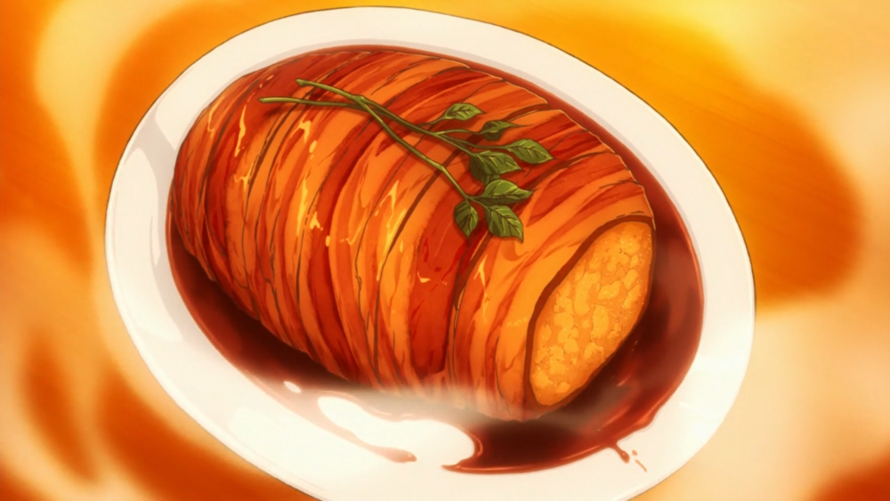

Roast Pork, Just Kidding

Description
This is Sōma's innovative dish which is served to repel the vicious urban residential planner, Yaeko Minegasaki from destroying Restaurant Yukihira. Even when after all the meat materials were sabotaged in his kitchen, Sōma managed to turn the tides
by using some of the groceries as his ingredients to create artificial meat.
Ingredients
- -6 white potatoes.
- -3 Eringi mushrooms
- -1 large white onion, or 2 medium white onions.
- -1 sprig of rosemary.
- -Butter. I suggest 2 tablespoons (30ml), but you could always used a bit more.
- -2 packs of thick-cut bacon.
- -1 cup, or 250ml of red wine. We used a Pinot Noir since its preferable for cooking.
- -1/4 cup, or 60ml of sake. Any sake that is labeled as “sweet” should do.
- -2 tbs, or 30ml of soy sauce.
- -1 spring of parsley or any garnish.
Steps
- Step 1: Peel the Potatoes -Amount: 6 white potatoes.
- Step 2: Slice the Potatoes -Wash the potatoes then cut them into quarters or halves, depending on size.
- Step 3: Chop the Mushrooms and Onions into Equally-sized Brunoise (small 5-6cm cubes) -Amount: 3 Eringi mushrooms and 1 large white onion or 2 medium white onions.
- Step 4: Steam the Potatoes -Steam potatoes until soft (about 15-20 minutes). -DO NOT steam or microwave the mushrooms.
- Step 5: Pan Fry the Onions and Mushrooms -Prep the pan with a tablespoon of butter. -Pan fry onions and mushrooms until caramelized or fully golden.
- Step 6: Mash the Potatoes -Mash into small chunks in a large bowl. Do not mash too much, you want to avoid it being frothy to form it to shape.
- Step 7: Combine the Onion and Mushroom Mix with the Potato Mash -Mix until the ingredients are even in the bowl.
- Step 8: Pick the Rosemary -Pick the rosemary off its stem. -Set aside.
- Step 9: Add the Salt -Add a few sprinkles of salt to the top of the bowl.
- Step 10: Form the Fake Roast -Let the mix cool until touchable (more than 5 minutes). CAUTION HOT -Take all of the mix and form it into a log shape.
- Step 11: Wrap the Roast in Bacon -Amount: 2 packs of thick-cut bacon. -Wrap the roast fully, try not to leave any gaps, otherwise, the potatoes will seep out when the bacon tightens. -There is no surefire way of doing this, just coat it to
the best of your ability.
- Step 12: Tie the Roast -Tie the roast with the twine. It doesn't need to be anything fancy, just wrap it around a few times. -Intertwine the rosemary afterward.
- Step 13: Bake in the Oven -Bake at 375ºF or 190ºC for 30-45 minutes or until bacon is golden (cook longer for crispy bacon), turning halfway.
-
Step 14: Boil the Wine In the Frying Pan -Amount: 1 Cup, or 250ml. -Bring the wine to a boil (~10 minutes) on medium-high heat in a frying pan. The aim is to reduce it.
- Step 15: Add the Butter, Sake, and Soy Sauce to the Wine -Amount: 1 tbs of butter, 1/4 cup of sake, 2 tbs of soy sauce. -Melt the butter into the boiling wine. -Pour the soy sauce and sake into the sauce. -Continue to cook for 2-3 minutes.
- Step 16: Remove the Twine and the Rosemary -When the baking is done, remove the twine and rosemary, they are not to be eaten.
- Step 17: Pour the Sauce on the Roast -Pour the finished sauce onto the roast (make sure the roast is on a plate to hold the extra sauce). Pour slowly.
-
Step 18: Add the Garnish -Add a garnish to the top of the dish, we used parsley, the anime used watercress.
-
Step 19: Serve